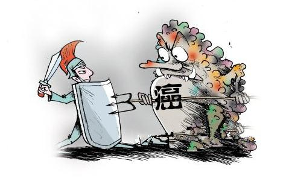

你可能蓦然发现，这几年许多亲朋好友“走”了，是因为一个人类还没办法对付的东西——癌症。
走的人跟我们的
我一位同学官至省长助理，前几天一直处在伤感之中，他的博士生导师、在国内颇有建树的著名经济学家董辅仁，因癌症去世。董老桃李满天下，追悼会在八宝山举行，党和国家领导人都送了花圈或亲自到场。一位学者对笔者说：“这些天净参加追悼会了，都是癌症去世的。”
董老先生还是高寿离去，在他之前不长时间里，接连有三位年富力强的经济学家因癌症去世。其中一位才三十多岁，临死前还对看望他的董老先生说：“真羡慕您，如此高龄还能从事自己的事业。我多想再多活一阵子。”可没多久董老亦追自己的学辈而去。
还是这段时间，我国一个级别非常高的单位，接连两届办公厅主任被癌症夺去生命。有一位刚提拔不久，就离开人世，家人痛绝，无济于事。
癌症似乎也是演员中的最高杀手，我比较喜欢、比较尊敬的几位演员都是因它而走，比如李媛媛、梅艳芳、傅彪等。
癌症几乎成了我们蓬勃发展的现代社会的第一杀手。任你才高八斗，名震邦国，它让你什么时候走，就得什么时候走，它不会等你，也不耐烦什么功业未完，稍缓时日的请求。
癌症是怎么来的？难道真是一种去不掉的文明附加物？标准答案是：癌症源于食肉！
可怕的肉毒 看了下面的文字后，你不用医生和科学家的研究报告，你就能天然感觉癌是从哪里来的，如果再嗜爱食肉的话，就有点冒死吃河豚的味道了。而且这些材料还是出
“我为什么成了
当您真正了解肉类是污秽不洁的，又是有传染病的尸首时，您能再面无惧色的狼吞虎咽吗？我不吃任何肉食和任何维他命丸，也
在旅行时，有一天吃肝咬了两三口，觉得味道不对劲，再用刀子一切，真把我吓了一跳，脓包里竟有一窝小虫，早己煮熟了。从那天起，每逢看见肝我就反胃。但是牛肉仍是我所喜爱的，直到一件事震撼了我，我才全然断绝牛肉！事情是这样的，我的邻居从牛群中挑了一只最棒的母牛，供应他自己的牛奶。某天，卫生员来检验，说这只牛有结核病，应予销毁。邻居说他不相信，置之不理，后来，另外的检验员又来检查，报告的情况相同。
我的邻居勉强的把牛送往一个较大的屠场，获得许可，观看切割。出现在他眼前的，是一整叶被结核菌蚀烂了的肺。此事过后不久，我领著班上的学生去远足，
过去我爱吃鸡。但参观附近的一个养鸡场之后，这方面的食欲也没有了。我看到，养鸡人天天巡视鸡房，把病鸡和少下蛋的鸡挑出来，送去市场。那些垂头丧气、屁股潮湿的家伙，都进了加工厂。使我吃惊的是，根本就没有任何检验工作。胃好像告诉我，别再把死鸡送进我的“皮袋”里去了！
某次，同朋友去亚利桑那州某山涧钓鱼，搞不清到底怎么了，所钓到的鱼中，将近二分之一是有肿瘤的，或在内部，或在外部，看了令人倒胃口。查阅有关资料，才从政府报告得知，有些山涧里，鱼癌流行，尤其是鳟鱼。其染病率有的高达百分之九十。
与中国相比，美国的水干净多了，即使如此，美国的鱼类还染上了癌症，那中国的动物呢？可想而知。
现在中国一个北方汉子就着二锅头嚼的猪头肉跟楚汉相争时樊蒯啖的猪腿已大不一样了。现在的动物尸体是内外均沾毒：现代农业广施化肥和农药，动物吃植物，毒素进入动物的体内，人又以动物为食，人便成为有毒物质的最高富集者。没办法，食肉者位于食物链的最高环节。
毋庸讳言，植物上有农药残留，但美国爱德华州立大学的研究结果显示，肉类中的DDT等杀虫剂残留物的含量是植物的13倍，即食肉者身上的农药残留量可能比食素者高出13倍。更何况植物上的农药残留物可以洗涤，动物肉内的农药残留物则无法洗掉。
有一句话说，现在吃大闸蟹和河塘鱼的都是勇敢的人。
农场主是一群可怕的人，他们成麻袋地往动物饲料和湖溏江河中倾泻化学药品，刺激畜禽鱼虾生长，强迫喂食、注射荷尔蒙、在饲料中加开胃药、抗生素、镇静剂、防腐剂（这类含硝酸盐的肉，喂猫都很危险），根本不顾这些化学物质的致癌作用，这样的肉，食肉者睁眼闭眼地享用了。
还有一种毒，叫肉毒。“肉毒极为害人！”北京人与动物环保科普中心的负责人张吕萍在目睹一次杀动物的场景后再一次呼吁人们警惕。
北京某地狗市。张吕萍形容是一个有铁石心肠的人才能看的血腥地方。屠夫当着其他狗的面，将带锯齿的利器一把扣在某狗脑袋上，令其致昏，吊起来，一刀捅死，立即剥皮。鲜血淋漓的冒着热气的狗肉就挂在群狗面前。张吕萍清楚地看见同是天涯沦落狗从集体狂吠到沉默，狗眼含泪。眼神惊恐、悲伤、哀怨、愤怒、诅咒。“如果它们会说话的话”她说：“它们一定在咒骂屠夫禽兽不如。”
这样的狗肉对人健康有百害而无一益。最可怕的是动物被杀时分泌一种毒素，这种毒素对人体非常有害，现代科学研究这是一种有害的肾上腺素物质。同样，注水猪、牛、甲鱼、鸡等被杀时不仅分泌应急毒素，还有体内污水，如此肉食，谈何安全？
癌症、疯牛病、禽流感、口蹄疫、SARS等疾病，在张吕萍看来皆与动物肉毒直接关联。都是动物冥冥之中的某种反抗。
癌症跟肉食正相关这就是说，吃肉越多，越可能得癌。一个由协和医院等单位的著名医师组成的医疗委员会调查显示，肉食与癌症有正相关。调查报告这样写道：“北京市癌症发病情况，1996年是1955年5.2倍。我们调查了城区的医院、居民，上个世纪大肠癌患病比例是十万分之十以下，八十年代十万之二十，九十年代十万之二十四，2001年十万之六十点四五。为什么城市里的癌症病人越来越多？跟饮食有关，吃肉多了，不吃粗粮，纤维素少了。癌症的增长率跟肉食的增长率曲线相似。”
另一个医学调查小组的报告说：“我国原是大肠癌的低发区，不足十万分之十，可近二三十年来随着食物结构的改变，肉食量的增加，发病率不断上升，达到了十万分之二十四点三一，相当于国际上中等发病水平。据研究估计，2000年以后，大肠癌发病人数将比八十年代高出1.45倍。上海地区大肠癌死亡率从1972年到1989年增加了75%，2000年以后，大肠癌发病数将比八十年代高出1.45倍。”
“五成癌症跟饮食有关。”在“2004年天津市肿瘤防治宣传周”上，专家如是说。“天津市癌症年新发病例为1.6万，并呈增长和年轻化趋势。据介绍，癌症尽管与遗传因素有关，但主要还是由包括饮食在内环境因素引起，如吃肉多了，主食吃得精细了，缺乏纤维素，即粗粮、杂粮等食入少，导致大肠癌发病率的升高；高脂肪、高蛋白的摄入是乳腺癌、结直肠癌发病率上升的重要原因；约有75%的头颈部癌是由饮酒和吸烟造成的。”
国外研究也证实，癌症跟肉食关系密切。根据一九九五年英国素食学会的研究报告发现，素食者早逝的机会只有非素食者的一半，且素食者较不会得心脏病和癌症，主要原因是素食者血中胆固醇含量低的缘故。
肉里到底有什么，为什么会致癌？除了公认的医学理论，许多学派和专家都把致癌物指向肉中之毒。上面已经说过，肉毒可怕，但这个事怎么强调都不过。中国著名的环保专家、北京麋鹿苑负责人郭耕说：“我举一条证据诸位就可明白：无论大小畜生被人捆缚要杀的时候，是多么
素食是如何防癌的呢？美国德州大学安德森医院的约翰逊博士经过多年埋头研究，发现了一个事实。凡是平日摄取大量钾的地区，人民患癌者总是偏低。原来人体细胞里，钾的含量时常是钠的十倍，细胞在分裂之时，钾含量下降而钠含量上升，癌细胞也不例外，每次细胞受伤时，钾由细胞之中漏出来，癌细胞即开始繁殖。人患上了慢性病，若有办法提高体内细胞的钾含量，生癌的机会则减少。相反，老年人体内的钾特别容易由细胞膜漏出来，所以患癌的机会随年龄而增加。医学研究进一步发现，如果在有些癌细胞的培养液中加进了钾，它会突然变成正常细胞。老鼠的血癌细胞本来不能造血，可是将其培养液中的钾提高到十倍以上时，就有造血的现象出现。由此证明，钾和钠的比例是癌细胞形成的关键。
近年食疗防癌的秘诀，正是根据这个原理，多钾少盐。食盐和味精（一种钠盐）都含有大量的钠，而蔬菜与豆类则含有大量的钾，所以多吃蔬果豆类少吃盐和味精，是防止癌症、血压高、糖尿病的重要举措。
素食之动物篇 这个
医学界做过这样的研究，比较食肉动物与人的肠子，以老虎为例，它的肠子看起来又短又直，没有许多皱折。我们知道，肉易腐败，所以上天给老虎短的肠子，使肉的消化残余物不会在肠子停留太久。而人的肠子总共约30尺长，光是大肠就五尺长，接近老虎的三倍，因此人不宜吃肉类，因为肉类容易腐败，在肠子的温度下更易腐败与发酵，这一点，我们可由草食动物的粪便没有肉食者的那种臭味而想像到。腐烂的肉类在人的肠子里会生出多少致病菌毒就可想而知了。
至于草食动物如牛、羊，上天给了它们好几个胃，因为他们只吃草，而草的纤维很多，消化时间长，且需要大量进食才能维持身体机能。所以它们有好几个胃来反刍，肠子比人类还要长。上帝不要人吃草，我们有五谷、硬壳果、豆类、水果等为食物，这些食物的纤维素不及草那么粗而难消化，不必反刍，所以一个胃就够了。
再有一点，人的臼齿发达，适合磨碎食物，也就是说，适合吃五谷、豆类；而食肉动物，门牙尖锐，犬牙交错，明摆着要用于攫取生命，咬碎肌体。了解了这一点，人们或许明白人类为何会百病丛生了，因为人违背了大自然的意旨，吃了不该吃的东西。
经常有人担心，素食营养不足。对于这个忧虑，素食者最常见的反应是笑而不答。他们可能乐于与肉食者比谁更健康。毫无疑问，从各个角度看起来素食者更健康：他们的身体更轻盈，他们的反应更敏捷，他们的脑力更充沛，他们更容易入睡，他们所需的睡眠时间更少，他们心情更开朗因而较少得
理论上讲，素食能够获得比肉食更优质的营养。首先要打破人们的一个成见：肉类比素食蛋白质高。其实许多素食品的蛋白质比肉类含量高：比如，各种坚果、瓜籽中的蛋白质达30%，谷物约含10%，豆类中的蛋白质含量更高，近40%，是肉类的两倍，
人们开玩笑，广东人煲肉汤，还不如一个北方汉子吃馍（馒头）壮。人们常常用肉类进补，其实，肉类不仅蛋白质不如豆类多，而且也是各种食物中最缺乏维生素和矿物质的。
即使是肉类最擅长的脂肪，也总被素食盖过。如核桃含油高达66.9%，花生达48.7%，
有一个美国医学组织要对素食进行对比研究，肉食组好找极了，而要找到纯粹的素食者并不太容易。于是他们到了中国的寺庙里，到了四川和湖南偏僻的寺庙里，一问吓了他们一大跳，那些老和尚，那些作为对照组的老和尚都多大年龄？平均80多岁。
吃素使身体强健肉食者有劲，素食者文弱，这种俗见可能有几千年了。实际的情况恐怕会让所有自认比素食者有劲的肉食者人大吃一惊（素食者并不会吃惊的，他们早就知道他们比肉食者更有劲）。
与咱们的观念大颠倒：奥运会似乎是素食者表现大力气的地方，奥运会也不知什么时候成了素食者云集的地方。第一次奥林匹克运动会的游泳冠军茂林罗斯就是个素食者，他的速度惊人，持久有力，是最负盛名的运动家，他的出现，掀起了西方的运动家吃素的风潮。
又过了几十年，专门吃素的运动理论也出现了，这就是《素食者运动营养手册》，作者丽莎。多芙嫚是迈阿密体育营养学家，她本身也参加马拉松赛和三项铁人运动，她大运动量的体育生涯从素食中大获好处。她还是几名奥运选手的教练。她说，对运动量大或是意在健身的人，素食很有效。
她并不夸大素食者的力量，她说：肉食者也能像素食者一样有很好的爆发力，但爆发力之后，素食者开始显现他耐久力的长处，素食者的耐力是肉食者远远比不上的。就像猎豹一扑之下抓不到羚羊的话，它就再也追不上羚羊了，这个肉食动物的跑王永远要在耐力的比赛上败下阵来的。
因而多芙嫚说，“奥运级的运动员或职业运动的选手并不一定要吃肉，吃素照样可让你成为彪悍的‘运动机器’。”
她在书中列出世界十七名顶尖运动员的训练秘诀和三餐食谱，包括奥运角力选手康贝尔、
多芙嫚说：“多吃植物有不少好处，其中之一就是蔬菜水果富含碳水化合物，这对长跑或短跑增加冲力都有帮助。”
让国人掉眼镜的是，世界最著名的中长跑之王，卡尔。刘易斯是一个严格的素食者，他回忆自己的运动生涯时说，我发现一个人能不需要动物蛋白质而成为一名成功的运动员。事实上，我的赛道赛跑成绩最好的一年是我吃严格素食的第一年。此外，通过继续吃严格素食，我的体重在控制之中，我喜欢我看上去的样子。（我知道这听起来很傻，但是我们都希望喜欢我们看上去的样子。）我喜欢吃很多，我感觉好极了。下面是我的故事。
食肉使人剽悍、使人孔武有力的观念，可能来自远古的野蛮时代，那时游猎氏族、山匪海盗等食肉部族无素可吃，以肉裹腹，攻占农耕文化的国度往往得手，素食者的和平性格总被肉食者的横蛮气势压住，像被视为“黄祸”的匈奴人和蒙古人在一千年内两次席卷欧洲，让这些“文明人”一次次被这些少食蔬菜、纯粹肉食的部族所震撼。食肉者勇武的概念在人类的意念中也一次次加深。但就是这些大败同样是食肉民族西洋人的蒙古人，却在十三世纪两次败在了食草民族日本人手下。据史载，那些很少吃肉仅吃一点生鱼片、却大量吃
大家都知道，古罗马是一个富裕到糜烂的社会。即使奴隶也能吃到肉粥什么的。但是在这个社会中最需要勇武、体力和灵敏的角斗士，却是素食者。在罗马语中，角斗士有一个另外的称呼，“嚼
还有一个例证能说明素食者的勇和健。那就是中国的少林武僧。因为影视作品的胡写乱编，中国大众一直以为，少林寺的和尚是“酒肉穿肠过，
素食民族聪明还是肉食民族聪明？关于这一点曾有许多争论。其实历史明摆着那呢，自古以来，汉族就是一个素食或被称为半素食的民族，它与周边的那些食肉的氏族部落到底谁聪明，不言而喻。华章典籍、物美民丰，都在诉说着一个民族富有创造性的大脑活跃在天地间。即使在与食肉民族西方列强角力落败的近代，一个西人聪敏还是一个华人聪敏的问题也是自有公论的。
印度因为信奉印度教的原因举国吃素（当然除了穆斯林）印度人是否聪明也是自有公论的。在世界上，智慧之王——数学和哲学都被印度人把持。举世公认，印度人最擅长数学，世界上许多数学大师都是出自印度，以至余习至今，印度成了软件第一国。印度古典哲学超过了古希腊、古埃及，其研究事物的深邃和系统甚至超过了以黑格尔和尼采为代表的日尔曼（德国）哲学，其他国家更是不能望其项背。
东方最有影响的
世界知识界至今最敬仰的古希腊哲学也是素食者缔造，古希腊巨匠苏格拉底、柏拉图、毕达格拉斯全是严格的素食者。
文艺复兴以来的巨匠中，素食者也不少。我们过去多是略知他们的作品和政治倾向，而对影响他们整个人生的生命倾向知之甚少，这其实是他们最重要、最本质的一个层面。达芬奇、托尔斯泰、萧伯纳、甘地、爱因斯坦（很长一段时间严格食素）他们为什么吃素？因为他们内心都有一种他们认为最神圣的爱和非暴力主义。很不幸，还有一个恶名昭著的人也是素食主义者，他就是希特勒，仅就素食对他智力的影响来说是勿庸置疑的。
以上这些最需要脑力去建造的智慧王国都是素食者所为，真是没什么话可说。
素食者的一个标志就是头脑灵活。嗜肉者的标志是头脑沉钝。中国人曾经因太过灵活了而屡被西人防范。
不少人改为素食之后，发觉自己脑筋灵活了，想象力丰富了，领悟力提高了，思考敏捷了，有些记忆力增加了。总之，脑部的功能明显渐入佳境，比年少年青时状态更美妙。事实上，世界各地自少素食的儿童往往都智能特别高，由此可知，素食增进脑力，该是千真万确的事了。
早在二千多年以前，我们的祖先也有同样的观察和判断！“食肉，勇敢而悍；食谷，智能而巧。”这是《大戴
西方科学家研究，人脑的细胞原来具有“正”、“反”两种的力量，二者产生交互作用，就有活动力。人们每次想做一件事之时，“正作用”的讯息就传出，与此同时，我们的大脑细胞又产生“不要做”的讯息，阻止进行，这个就是“负作用”。这样一个要进行、一个要阻止，正反两种作用在脑髓里一层高于一层地撞击不已。而我们要头脑运作得好，思考能力强、判断力准确，必须正反作用协调配合。若要达到这个境界，大脑的细胞一定要得到它们所需要的养份。原来大脑细胞“正作用”、“负作用”活动，主要靠麸酸提供动力（麸酸也叫做麦氨酸，是构成蛋白质的一种氨基酸），不过还要维他命B1和B12配合，才可以令大脑细胞发挥出“正作用”，同时，又要有维他命B6和泛酸（又叫做本多生酸）配合，才可以令大脑细胞发挥出“负作用”。而优质麸酸和维生素B族主要是从哪里来？植物和谷物。
人的脑袋主要的成份是蛋白质。许多人因此有个误解，以为只要多吃含蛋白质的食物，就可以“补脑”，过去几十年，甚至营养学界误以为肉类的蛋白质比较“优质”。事实恰巧相反：肉类确实含有大量蛋白质，但这些蛋白质是酸性的，人们吃多了，会而令体内的血液变成酸性。为了平衡这种对身体不利的情况，身体从各部分抽出钙质来中和，又消耗大量维他命B1，结果造成全身钙质及维他命B1欠缺，引起骨质疏松症及其它骨骼问题，而且精神不稳定，头脑活力迟钝，血液循环欠佳。
那么，究竟哪些蛋白质对人体最有利？植物类蛋白，这是因为它含很少酸性物质。蔬菜水果一般都会令人体变碱（虽然有些水果表面上很酸），多吃会令我们的血液呈弱碱性，保持头脑清醒。
大便畅通也是脑力充沛的一个关键。理由很简单：食物若留在肠子里时间一久，即会发酵变臭变毒，引起复杂的生物化学连锁效应，导致全身受害，包括头脑昏沉。凡是多纤维的食物，都有助于大便畅通，凡是鱼肉类食物都有使大便滞留的倾向，因而从这点上说，蔬果也有间接令人思想敏锐的功效。
还有一点非常重要，动物性脂肪黏着力非常强，这一点我们可以在洗刷炖过肉的锅并与素菜锅比较就可得出。而肉食者的血管特别是毛细血管被动物油脂附着，变形细化，使血液
一位医生告诉笔者，维生素B1和C对脑部运作非常重要。吃素特别容易吸收此二者，结果活力充沛，头脑清明敏锐。“吃肉不多的孩子特别聪明伶俐”——他说这是他多年冷眼旁观的结论。